01
熊本市
タイム
江津湖の散歩の途中に立ち寄った、古民家を改装した店。木のぬくもりとカラフルな異国風の装飾が華やかで、それでいて落ち着く。運ばれてきた冷たいフォーが体にしみて、散歩の疲れも吹き飛んだ。
Instagram@pho___time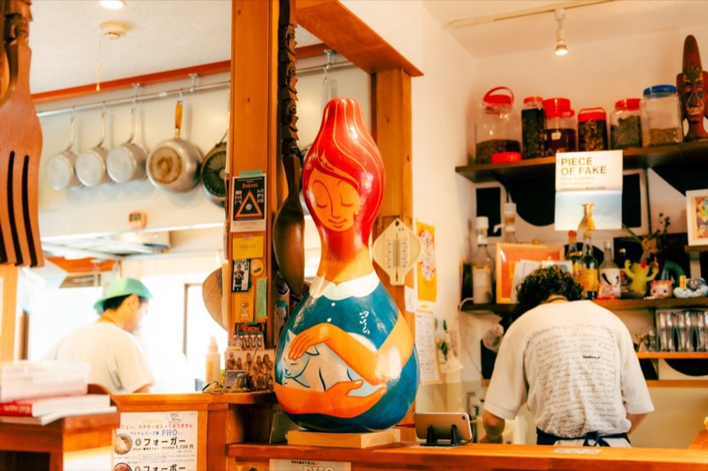
Chapter 01
4つの地域をめぐって出会った、熊本の人・場所・暮らし。そこから見えた、台湾とのつながり。
Area 1
取材日 6/6取材メンバー 西浦・茂田・川添・内田
One Day Summary1日まとめ 一日總結
歩くたびまたちがった顔を見せる。熊本はそういう街だと思う。
コンパクトな街並み、自然との共生、四季の鮮やかさ、いろんな理由がある。ただなによりもここに住む人達の暮らしが、土地に根づいた、派手さをむやみに求めない、それでいて豊かなものだからではないかと感じる。
だから今日も歩きたい。時間はかかっても、この目でじっくりと、まだ見ぬ熊本の姿を発見したい。どこかに足を運ばなくても、楽しめるような道具が増えたいまだとしても、その場所でしか感じることのできない、人の血の通った生活、生まれる出会い、交わされる言葉。そうした経験は、遠い地から訪れた旅人に限らず、そこに住む人ですら、同じ土地を共有しながらも、知らなかったことがどれほど多いかということに思いいたらせるのだろう。
ほかならぬわたし自身がそれを知ったからだ。
そして見えてきたのは、そのちがった顔の数々のなかに一貫して顕れる、この土地を愛し、それを守りたいと思い、その魅力を多くの人に伝えたいと願う、ちょっぴり暑苦しくもあるような人々の情熱だった。
そしてそのエネルギーに感化され、次々とかたちづくられていく人と人の輪の大きさだった。それをぜひ皆さんにも目撃してもらいたい。
江津湖の散歩の途中に立ち寄った、古民家を改装した店。木のぬくもりとカラフルな異国風の装飾が華やかで、それでいて落ち着く。運ばれてきた冷たいフォーが体にしみて、散歩の疲れも吹き飛んだ。
Instagram@pho___time
熊本の人に愛される憩いの場で、「タイム」からも近い下江津湖のほとりのベンチに腰を下ろした。澄んだ水と緑を眺めながら文庫本を開くと、喧噪を忘れて、いつまでも座っていたくなる。朝や夕暮れの散歩にもよく、老若男女がのびのびと交わる空気がある。
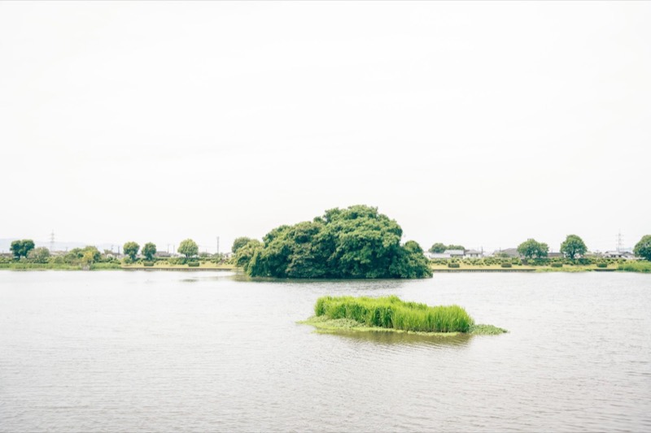
並木坂から仁王さん通りを奥へ入った先にある、一風変わったカフェ。若いお客さんと若い女性の店員さんで活気があり、奥の古着屋とギャラリーにはカルチャー好きの人たちが集まっている。どこから来た人かわからなくても一緒に楽しめる、貴重な場所だ。
Instagram@ocamicoffee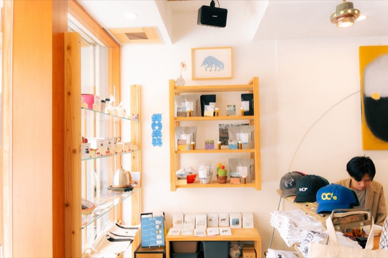
河原町の繊維問屋街、昭和にタイムスリップしたような一角にある隠れ家のような店。数年前に熊本へ移住して開業した店主の軽やかな語り口に引き寄せられ、タコスとともに会話もはずんだ。ひとりで訪れても、開放感に浸れる。
Instagram@outotutacos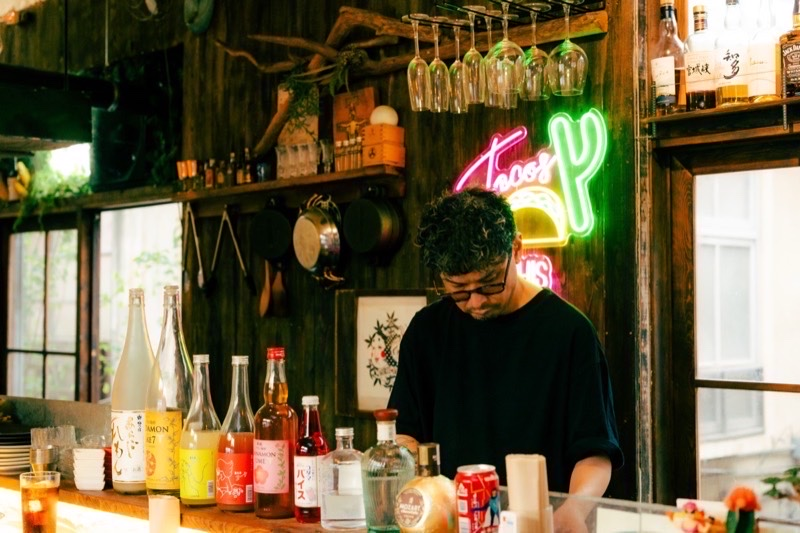
凹凸タコスからほど近い、赤いネオンが光る個性的な店。懐かしい暖簾をくぐると穏やかな店主が迎えてくれ、赤い光は目が慣れると妙に落ち着く。1日の終わりに、明日の活力をくれる場所だと感じた。
Instagram@akaruimirai_kumamoto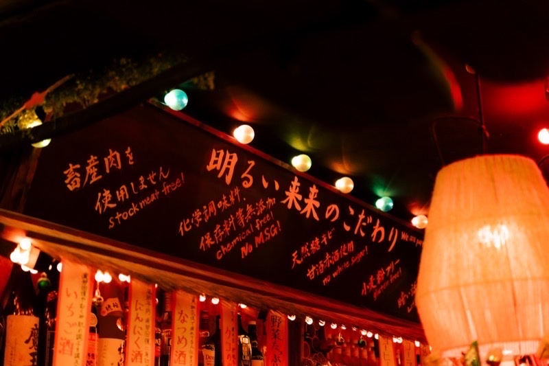
Area 2
取材日 6/21取材メンバー 西浦・川添・内田・伊藤
One Day Summary1日まとめ 一日總結
見慣れた景色は、それによく親しんでいればこそ、新たな楽しみかたを見つけられる、そう感じた一日だった。とくにそれが、豊かな自然をもつ場所であればなおさらだ。阿蘇と小国は、県内でも有数の観光地、これまでになんども訪れた。幼いころ行った、たくさんの名所の記憶は、そのままこの土地に染みついた匂い、色彩、景色として、時間の感触そのものとして、からだに刻まれていた。
ただそれは、やはり外から訪れた人間が、文字どおりその地を移動しながら、多くはその目的のためにつくられた、あつらえ向きの楽しみを受けとるような、そういう旅だったかもしれない。
この日もそれに似てはいる。ただそこで出会ったのは、ほんとうにこの土地に根づき、ここで生活を営み、この豊かな資源を、利用するよりはそれと共生しているひとと場だった。楽しむとは、この土地の表層を滑るように行き来するだけでなく、その奥深くにまで入りこんだ生活者の、ときにざらついた手ざわりまでも感じとりつつ、言葉を交わし、顔に接して、そのひと自身の土地の時間そのものに、ふれる可能性をもつことではないかということを教えられた。
そしていつしか、じぶん自身も、その土地とともに年をとれたならいいと願う。
熊本市内から車で1時間半、畑道の木々に囲まれた隠れ家のようなカフェ。店先にはイチゴが植えられ、店主は農家も兼業しているという。窓際の席で本やレコードを手に取り、トーストを味わううちに時間を忘れた。
Instagram@aiueo_eieio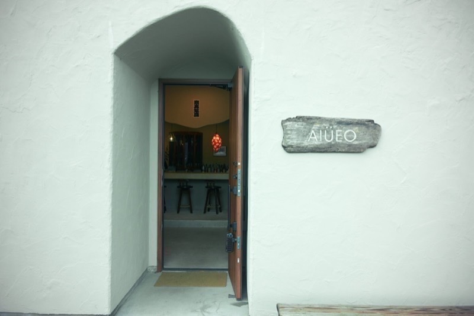
山道を走った先、小高い丘の上にある小さな動物園。飼育員さんと一緒に、ヒヨコやヤギ、ウサギ、モルモットにふれ、カピバラやアルパカにも会える。子どもたちの笑い声も響く、愛情とやさしさの伝わる癒しの空間だった。
Instagram@fairytale_zoo_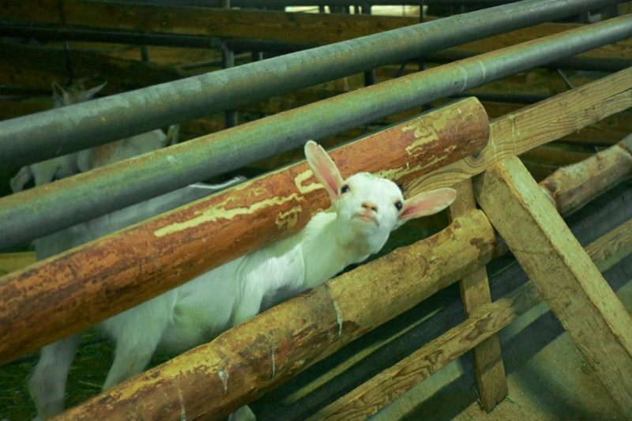
蕎麦屋が並ぶ「そば街道」のなかでも、山道の奥深くに潜む一軒。川の音が心地よく、座敷からは景色が一望できる。名物の「雲海そば」は、メレンゲにのせた黄身を溶かしながら食べる、まろやかな一品だった。
Instagram@kishoan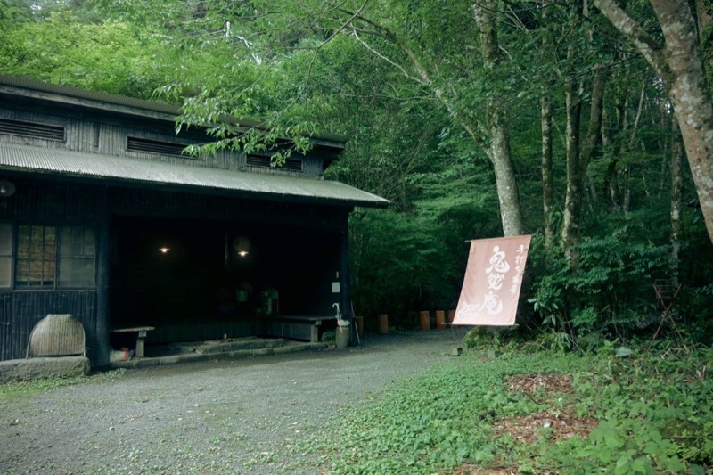
砂利道を走りつづけて車を降りると、青空の下に丘陵がどこまでも広がる。頂上では四方の絶景と、あたりに散らばる巨大な石に圧倒され、寝そべって澄んだ空気を味わった。磁力を帯びているという押戸石にふれると、不思議な感覚が伝わってきた。
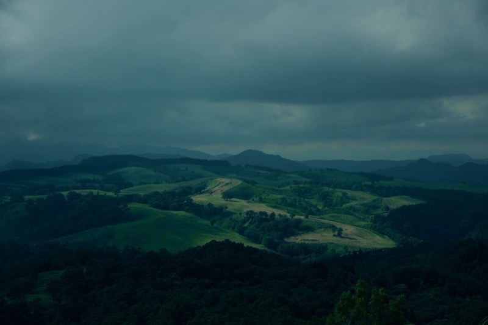
日が傾いた頃、温泉には入らず街道を歩いて回った。暖色の街灯の下で、売店のレトロなパッケージのビールを手に取り、足湯で体を温める。疲れがほぐれ、特別な一日がやさしく終わっていった。
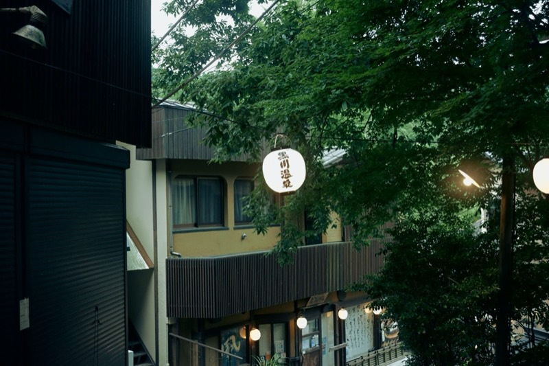
Area 3
取材日 7/18取材メンバー 西浦・茂田・川添・内田・清﨑
One Day Summary1日まとめ 一日總結
夏も深まり、強い日ざしに緑が照り映える、山あいを走る。
幼い頃にもよく訪れた、自然豊かなこの地域。その思い出を呼び起こす、澄んだ川の音、蝉の声、美しい木々にこころひかれつつも、すこしだけ大人になったいまは、じっくりこの地のひとの声に、耳を傾けたくなる。
そこで目にしたのは、この地にずっと居つづけたい、あるいはいちど離れたがまた戻りたくなったというひとの想い、そしてそこで新たに場をつくり、訪れたひとにもまるで故郷のようにこの地を愛してもらいたいと、尽力するひとの営みだった。
あるひとは、甲佐町の一大行事に終止符を打ったあと、カフェも営みながら、また別のかたちでこの地に命を吹きこもうと、若い世代も巻きこんで活動をつづける。あるひとは、ごく若くして山都町のドーナツ店の看板を担い、この地への愛着を深めながら、その笑顔を訪れた皆にふりまく。またあるひとは、故郷ではない甲佐町に、旅人をもてなす宿とコーヒースタンドを設け、だれもが和やかに過ごせる空間をもたらす。
だれもが故郷を愛せはしない。しかし、名所旧跡や観光地でなくとも、だれもをひとしく出迎えて、また一時でも戻ってきたいと思える、家のような安らかさとくつろぎを感じられる場は貴重だ。じぶんもそんな風に胸を張れる場を、故郷に持てるだろうか。
小学校の隣にある、学童、福祉施設、レストラン、イベントスペースを兼ね備えた複合施設。草木の緑と石畳の道のあいだに温かみのある建物が並び、多様な人に開かれている。意味や目的がなくても、ふらりと動きまわって楽しんでほしいという思いから、遊び場があちこちに広がる。
Instagram@chojuupark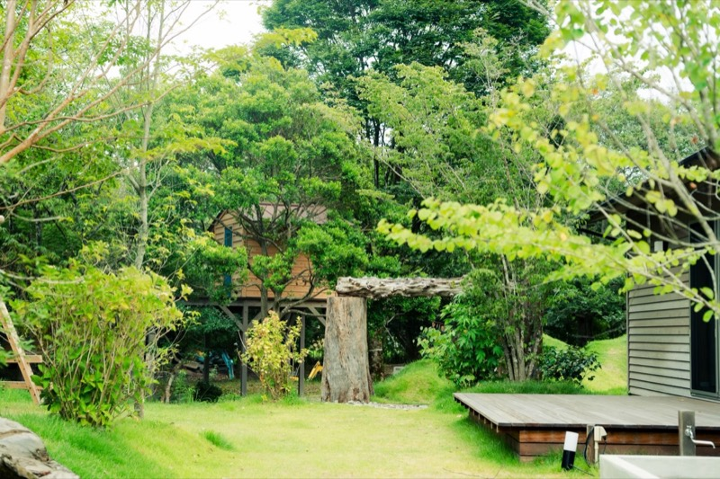
小川と商店街に挟まれた通りにある、モダンな雰囲気のカフェ。植物や雑貨、アパレルの店も併設され、子どもたちの声が交じって家のように和やかだ。ハヤシライスのセットを味わいながら、オーナーご夫婦の「この町を盛りあげたい」という熱い想いにふれた。
Instagram@newold_kumamoto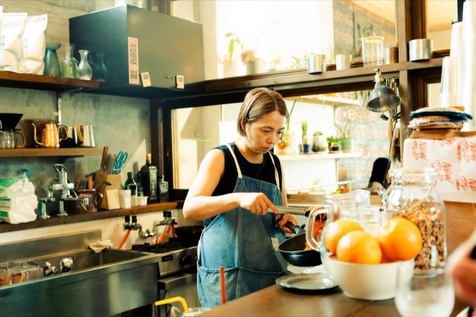
山都町の東端、宮崎との県境近くの古い街並みになじむ古民家のドーナツ店。店内は異国を思わせる雑貨や書籍、服であふれ、オーナーもスタッフも海外旅行好きで、持ち帰ったものがインテリアになっている。おすすめのバンバローニは、甘じょっぱくもっちりした食感だった。
Instagram@jugaad_bros_doughnuts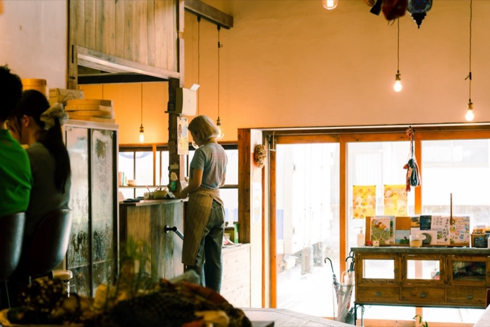
緑川に架かる、全長90メートルの巨大な石橋。橋の上から木々や山々が続くのを眺め、川岸に降りると、水の音とともに夏空を区切るアーチが迫ってくる。離れがたくて、しばらくその場に立ちすくんだ。
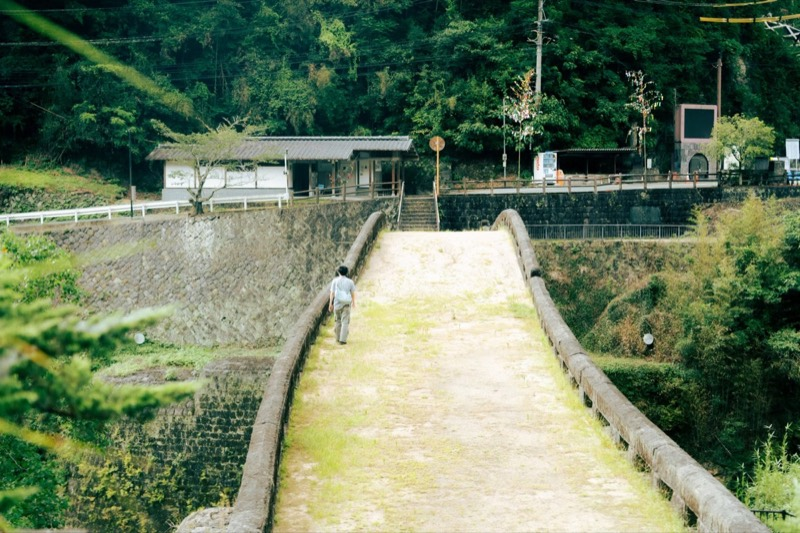
落ち葉に覆われた暗い小道の先に、八角形の石造りの門が並ぶ。廃線になった鉄道の遺構で、隙間から差す光が濃い陰影をつくる。静寂のなかに虫や鳥の声が響き、何か大きなものに包まれているような感覚がした。
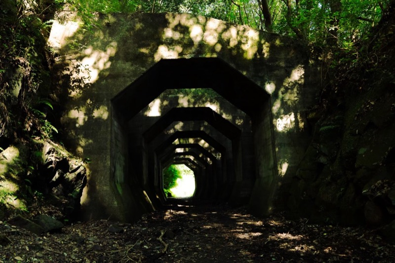
築130年の古民家を再利用した宿に併設された、コーヒースタンド。縁側の席からは小川の流れが望め、オーナーご夫婦の明るいトークとともに、部屋名にちなんだコーヒーを楽しんだ。本を読んだり景色を眺めたりできる、多目的な停留地として愛されている。
Instagram@1993coffeestand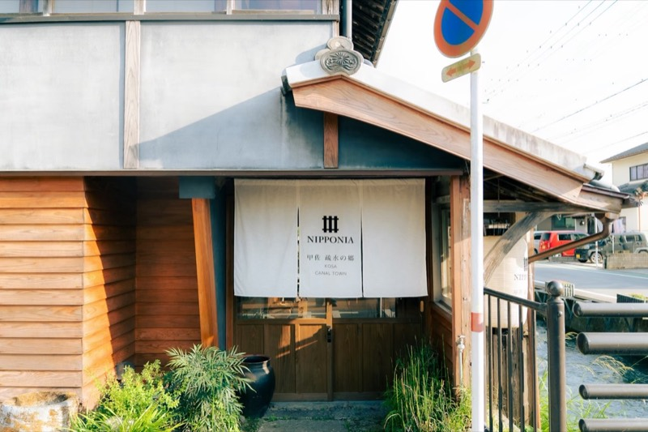
Area 4
取材日 9/19取材メンバー 川添・今村
One Day Summary1日まとめ 一日總結
熊本市内から車でわずか30分ほどのこのまちを巡る。
新しくできたお店にも、そこに根付く風土を感じたり、温かい人柄に触れたり。あるいは遠く、台湾からの風が吹いていたり。
朝、柔らかい光に照らされる台湾朝食の湯気が心地よかった。時間を忘れて漫画の世界に浸ったあとは、古民家カフェでクリーミーなパスタを頬張る。食後は、頬を撫でる秋風を感じながらいただいた素朴なおやつ。そして青々としたとうもろこし畑の迷路で彷徨いながら、童心を思い出すのもなんだか嬉しくて。
名所を駆け足で巡るのとは違う、その場所ごとの空気や手触りをひとつひとつ味わう時間。ただそこに身を置いているだけで、ふっとほどけ、心と身体の奥までじんわり満たされていくような、そんな気分だった。
遠くへ出かけなくても、暮らしのすぐそばには、これほど豊かで温かな一日が待っているという発見が、私の新しいお守りに。解された気持ちのまま、夕暮れの道をのんびりと家路につく。今度は誰を誘って、どんな季節にこのまちを訪れようかな。
新しい家々が並ぶ住宅街に突然現れる台湾朝食の店。早朝から賑わい、聞こえてくるのは台湾の言葉で、半導体関連で熊本に暮らす人たちの拠り所になっているらしい。蛋餅（ダンビン）を頬張り、熊本にいながら台湾を感じる朝になった。
Instagram@hanabitaiwan2023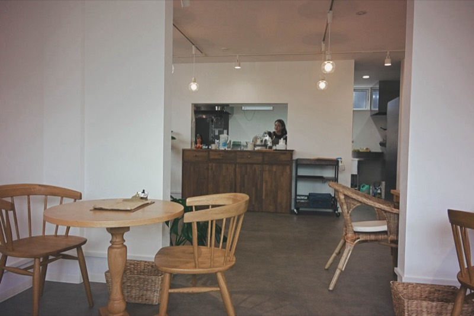
壁一面に世代を超えた蔵書が並ぶ、マンガの天国。心地よいBGMが流れる館内では、畳の小上がりやキューブ型の席で、子どもも大人も思い思いの体勢で自分だけの物語に没頭していた。
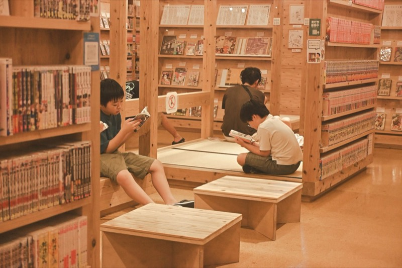
築60年の古民家を改装したカフェで、かつては店主のおばあさまが住んでいた家だという。懐かしく温かい雰囲気のなか、クリームパスタのセットを味わった。店主には台湾留学の経験があり、メニューには台湾料理も並ぶ。
Instagram@yoyn_japan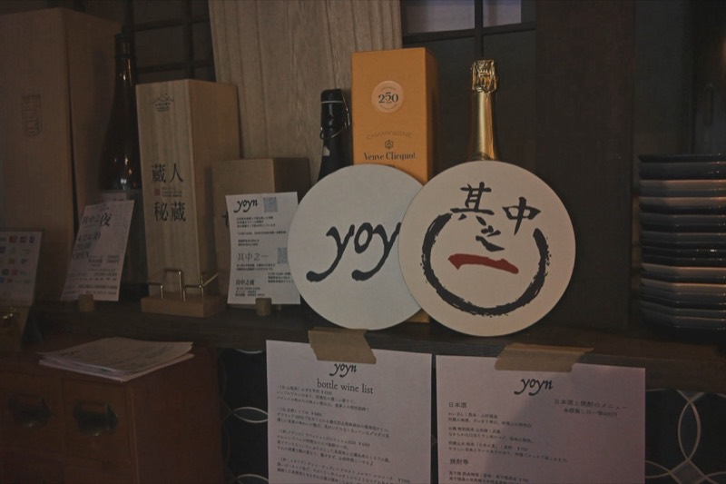
畑に囲まれたのどかな道の先に、ぽつりと現れる店。農家の納屋を改装した空間には温かい手仕事が息づいている。秋風を感じる外の席で、小豆のソフトクリームとホットコーヒーを交互に味わった。
Instagram@tron_kmmt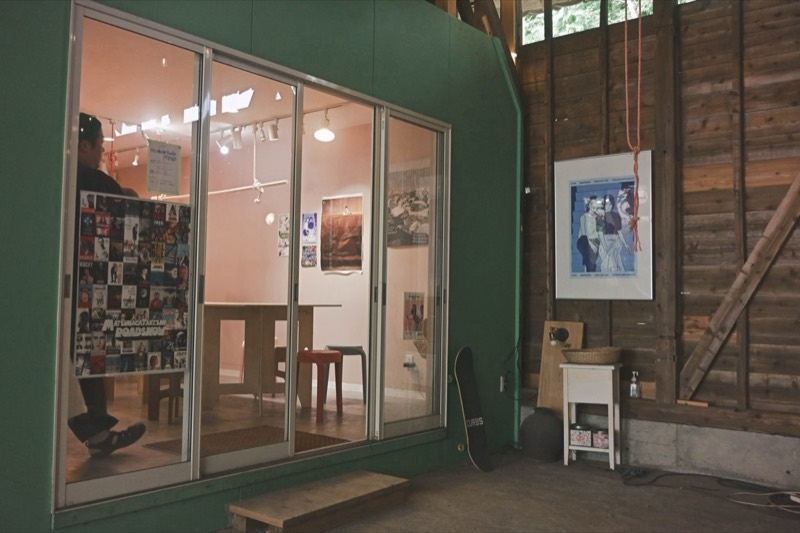
車を降りると、牛たちの元気な鳴き声が出迎えてくれる牧場。生まれたばかりの子牛も人懐っこい。期間限定のとうもろこし畑の巨大迷路にも挑戦し、童心に返って楽しんだ。
Instagram@milkorolab.oyabu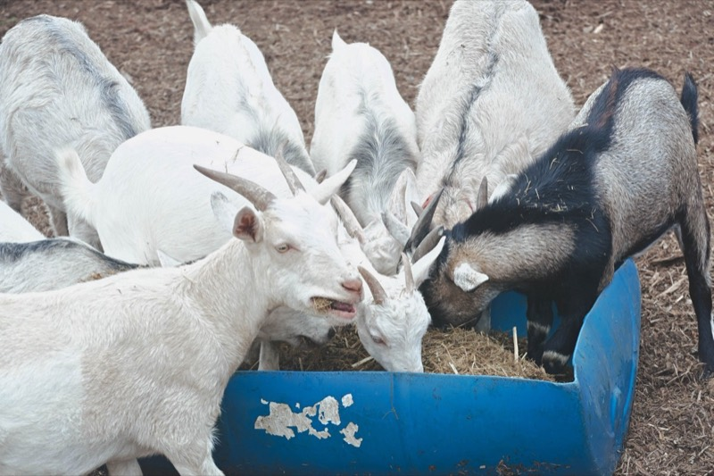